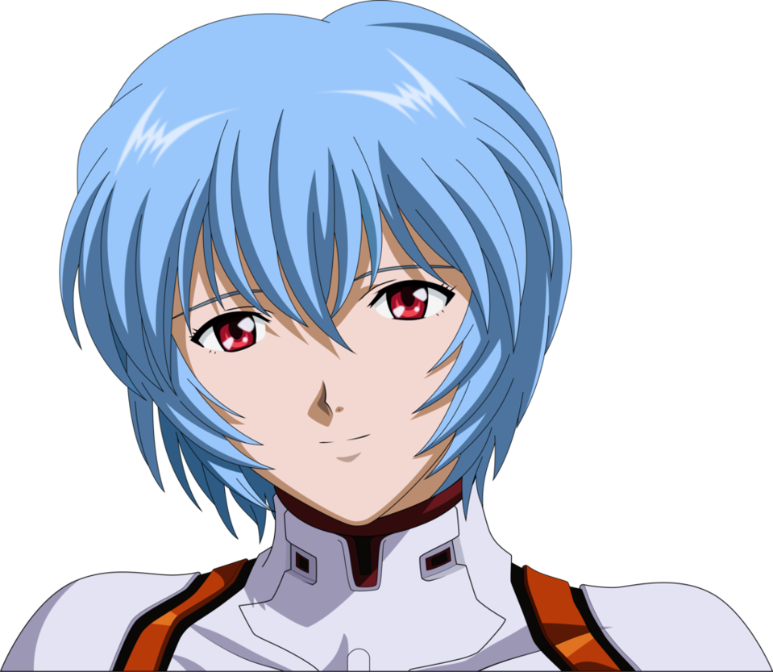

Аска Лэнгли
Аска Лэнгли Сорью — одна из главных персонажей аниме-сериала и манги «Евангелион», вышедших в 1995 году. Вторая из детей, способных управлять боевыми роботами «Евангелионами» (или сокращённо — «Евами»), разработанными организацией Gehirn и используемыми её преемником Nerv для защиты от таинственных созданий — Ангелов. Также Аску называют «Второе Дитя».
Read more
Синдзи Икари
Си́ндзи И́кари— главный герой аниме-сериала и манги «Евангелион», вышедших в 1995 году. Третий из Детей, способных управлять боевыми роботами, «Евангелионами» (или сокращенно — «Евами») разработанными организацией Gehirn и используемыми её преемником Nerv для защиты от таинственных созданий — Ангелов. Синдзи также называют «Третье Дитя».
Read more

Аянами Рей
Рей Аянами— одна из главных персонажей аниме-сериала и манги «Евангелион», вышедших в 1995 году. Также появляется в аниме, манге и играх, созданных по мотивам оригинального произведения, сюжет которых не связан прямо с оригинальной работой. Четырнадцатилетняя девочка. Первая из Детей, способных управлять боевыми биороботами «Евангелионами» (сокращённо — «Евами»), сделанными организацией Gehirn и используемыми её преемником Nerv для защиты от таинственных созданий — Ангелов.
Read more